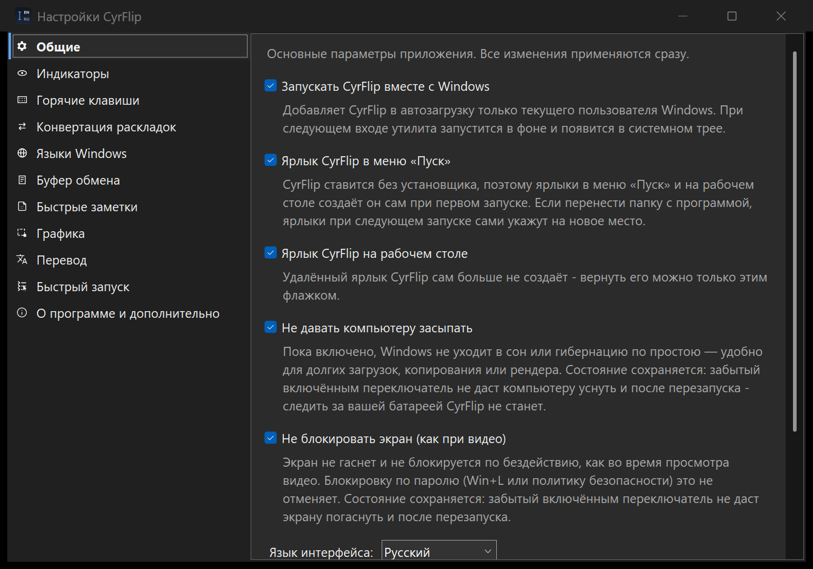
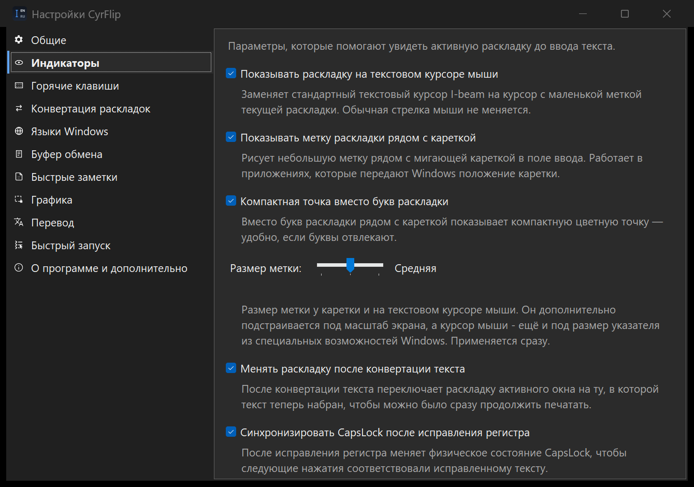
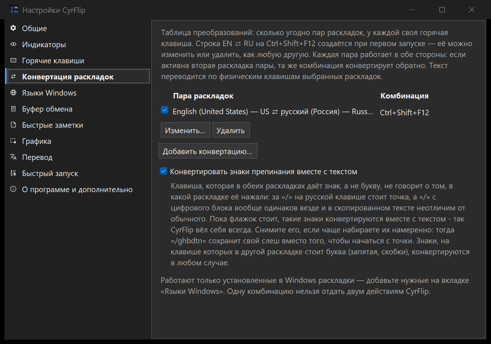

Приложение CyrFlip работает самостоятельно — ставит маркер раскладки на системный курсор и рядом с кареткой в любом приложении, транслитерирует текст одной горячей клавишей. Если вы используете VS Code — необязательное расширение для VS Code добавляет тот же маркер точно у каретки редактора Monaco. Ниже описано, как их настроить.
Приложение - это «мозг»: оно знает активную раскладку. Расширение - лишь поверхность для отображения в VS Code, потому что VS Code рисует собственную каретку и не спешит сообщать её местоположение внешнему миру.
CyrFlip.exe (трей) %LOCALAPPDATA%\CyrFlip\ Расширение VS Code
определяет раскладку ──пишет──▶ layout.txt ──следит──▶ рисует маркер
у каретки редактораПриложение должно быть запущено, иначе расширению нечего показывать - оно только читает то, что публикует приложение. Без VS Code вы всё равно получаете значок в трее, маркер на курсоре мыши и горячую клавишу транслитерации везде.

Любой из вариантов:
winget install SerZhyAle.CyrFlip%LOCALAPPDATA%\Programs\CyrFlip,
и запустите CyrFlip.exe. Устанавливать ничего не нужно; работает на «голой» Windows 10/11. ZIP не подписан цифровой подписью, поэтому Windows или антивирус могут предупредить - что это значит и что нажать.После запуска CyrFlip сидит в системном трее (без окна). Значок показывает активную раскладку. Правый клик открывает историю буфера, её включение и паузу, переключатели индикатора и Настройки. В настройках находятся горячие клавиши, автозапуск, приватность и диагностика.
Включите Start with Windows, чтобы приложение - а значит и маркер раскладки везде, включая VS Code - было доступно сразу после перезагрузки.
История буфера выключена, пока вы не включите её в меню трея. Она сохраняет недавние Unicode-тексты в небольшом окне поверх других. Кликните запись, чтобы использовать её; важные записи можно закрепить, а ненужные удалить. Ctrl+Shift+F10 показывает или скрывает окно.
История хранится только локально и защищена Windows DPAPI для вашей учётной записи. Захват можно поставить на паузу, очистить историю или полностью выключить функцию в трее либо настройках.
Выделите текст где угодно в Windows и нажмите свою комбинацию — у стартовой строки это Ctrl+Shift+F9 — рядом с указателем мыши откроется небольшое окно, и перевод будет появляться в нём по мере того, как его пишет модель. Работает это на Ollama — бесплатной программе, которую вы один раз ставите на свой компьютер сами: CyrFlip её в себе не несёт, у него нет ни учётной записи, ни ключа, и никакой текст не уходит ни разработчику, ни в облако. По умолчанию перевод выключен: пока он выключен, комбинация не назначена, пункта в трее нет, и CyrFlip не открывает ни одного сетевого соединения.
aya-expanse:8b (~4,7 ГБ, по умолчанию - лучший перевод из проверенных) и
gemma2:9b (~5 ГБ). Модели меньше 4 ГБ проверку на русском и украинском не прошли,
поэтому gemma2:2b (~1,5 ГБ) остаётся только для машин, где мало места, и будет ошибаться. Память под модель держит процесс Ollama, а не CyrFlip: сам CyrFlip
остаётся в своих 50 МБ. В сборке из Microsoft Store кнопка установки только открывает сайт
ollama.com — приложение из Store не может скачивать и запускать установщик.Честные оговорки: качество перевода — это качество локальной модели; первый перевод
после холодного старта идёт заметно дольше, потому что модель ещё загружается в память; а сама
Ollama вместе с моделью — это несколько гигабайт, которые вы скачиваете один раз. Адрес по умолчанию
http://localhost:11434 — это ваш собственный компьютер; вкладка настроек прямо
предупреждает, что другой адрес означает отправку выделенного текста на ту машину.
Правый клик по значку в трее и Настройки... (или двойной клик по значку). Любое изменение применяется сразу - перезапускать и сохранять ничего не нужно.
| Вкладка | Что там есть |
|---|---|
| Общие | Запуск вместе с Windows; не давать компьютеру засыпать и не блокировать экран (оба запоминаются - забытый включённым переключатель не даст компьютеру уснуть и после перезапуска, следить за вашей батареей CyrFlip не станет); язык интерфейса - 13 на выбор; тема - как в Windows (по умолчанию), светлая или тёмная. Все окна, диалоги и меню переключаются сразу, а «как в Windows» следует за Windows, пока CyrFlip работает; контрастная тема Windows всегда важнее. Метка раскладки в любой теме сохраняет свои цвета - они обозначают раскладку. |
| Индикаторы | Маркер на курсоре мыши (по умолчанию выключен), маркер у каретки (включён), компактная точка вместо букв, менять раскладку после конвертации текста и синхронизировать CapsLock после исправления регистра. |
| Горячие клавиши | Общий выключатель плюс отдельные выключатель и комбинация для исправления регистра и менеджера буфера - можно оставить только нужную. Там же уступать хоткеи удалённому рабочему столу: пока в фокусе окно mstsc/msrdc, комбинация уходит в удалённый сеанс - это то, что нужно, когда CyrFlip запущен на обоих концах RDP. Здесь же живёт контекстное меню: его выключатель и аккорд мыши, который его открывает. |
| Конвертация раскладок | Одна таблица, где живут все комбинации, конвертирующие текст между раскладками. Строка EN ⇄ RU на Ctrl+Shift+F12 создаётся при первом запуске, её можно изменить или удалить, как любую другую; пар можно завести сколько угодно, у каждой своя комбинация и свой выключатель. |
| Языки Windows | Настройки ввода самой Windows, без открытия её панели: установка, порядок и удаление раскладок (ничего не скачивается - раскладки уже входят в состав Windows), сочетание перебора (Alt+Shift, Ctrl+Shift, ` или выключено) и прямые сочетания на язык, которые обрабатывает сама Windows, поэтому они работают и при закрытом CyrFlip - и, в отличие от штатного окна Windows, здесь не только Ctrl+Shift+цифра. Оба раздела один раз сохраняют состояние «до CyrFlip» и умеют его вернуть. |
| Буфер обмена | Включение истории, пауза захвата, показывать ли окно менеджера при запуске, его прозрачность, поиск по всей истории и полная очистка. |
| Перевод | Главный выключатель перевода (по умолчанию выключен), адрес сервера Ollama и модель, кнопки «Установить Ollama», «Запустить Ollama», «Проверить связь» и «Загрузить модель», таблица направлений со своей комбинацией на строку и что делать с результатом — класть в буфер обмена или сразу вставлять вместо выделения (обе опции выключены). |
| Быстрый запуск | Необязательный лаунчер сценариев — см. раздел ниже. |
| Быстрые заметки | Необязательный локальный блокнот — см. раздел ниже. |
| О программе | Версия сборки (тот же штамп YY.M.D.HHmm, что и у релизного ZIP, - сразу видно, вошло ли исправление в вашу копию; сборка из Microsoft Store сообщает об этом отдельно), ссылки, отчёт диагностики положения каретки и Отправить логи автору.. - собирает логи CyrFlip в один архив и открывает письмо, которое отправляете вы сами. |
Изменение в «Языках Windows» обычно вступает в силу сразу, но иногда Windows окончательно принимает его только после выхода и повторного входа. Версия из Microsoft Store работает в контейнере, поэтому Windows может перенаправить такие записи в реестр внутрь пакета - вкладка предупреждает об этом и даёт ссылку на настройки Windows.
Необязательный модуль, вобравший в себя OneClickRunner, — один процесс в трее вместо двух. По умолчанию выключен: пока не включите его в «Настройки → Быстрый запуск», CyrFlip ведёт себя ровно как раньше — ни лишнего пункта в трее, ни задач в Jump List.
yt-dlp должна быть в
PATH). В таблице настроек их можно добавлять, менять, клонировать, сортировать, искать,
экспортировать и импортировать.%APPDATA%\CyrFlip\Scenarios,
формат совместим с OneClickRunner. Выключение модуля очищает трей и Jump List, но файлы остаются до
следующего включения.%APPDATA%\OneClickRunner\Scenarios); исходные файлы никогда не изменяются,
а кнопка «Импорт из OneClickRunner...» повторяет перенос в любой момент. .ps1 запускаются
через PowerShell с разовым -ExecutionPolicy Bypass, .bat/.cmd —
через cmd.exe; права администратора запрашиваются только у сценариев с соответствующей
отметкой.Всё, что CyrFlip умеет делать с выделением, живёт за горячей клавишей. Этот модуль кладёт те же команды на мышь: удерживайте Ctrl и щёлкните правой кнопкой по выделению — у указателя откроется собственное меню CyrFlip: «Копировать / Вырезать / Вставить», затем ваши конвертации раскладок, исправление регистра и строки перевода, затем «Быстрый запуск» и история буфера, затем настройки. По умолчанию модуль выключен, и пока он выключен, мышиный хук вообще не устанавливается: хук, стоящий на пути каждого движения мыши в системе, не должен существовать ради функции, которую никто не включал.
Модуль не читает текст и ничего не сохраняет. Он следит за своим сочетанием и, пока меню открыто, за щелчком мимо него: меню, принадлежащее фоновому процессу, не получает щелчок, который должен его закрыть, поэтому CyrFlip закрывает его сам.
Маленький локальный блокнот для того, что хочется сохранить прямо сейчас и найти потом. Нажали Ctrl+Alt+N, набрали или вставили, закрыли окно. По умолчанию выключено; пока выключено, CyrFlip не читает и не создаёт файл заметок, в трее нет пункта заметок и комбинация не назначена.
.txt или
.md, выгрузить все заметки в один Markdown-файл или «Копировать для Google
Keep» — текст уходит в буфер обмена, а CyrFlip предлагает открыть Keep, где вы его вставляете.Заметки хранятся только на вашем компьютере, в файле только на дозапись, где каждая запись зашифрована Windows DPAPI для вашей учётной записи — и имя, и текст. Ничего не уходит в сеть, ничего не индексируется поиском Windows, история буфера сама по себе в заметки не превращается, а в архив «Отправить логи автору..» файл не попадает никогда. Это всё же не хранилище секретов: не храните там пароли, боевые токены и приватные ключи. Экспортированный файл уже не зашифрован, и экспорт говорит об этом прямо.
Перенос в Google Keep — ручной, через буфер обмена, и это честный предел, а не упрощение: Keep API у Google — интерфейс для администратора Workspace, а не то, чем может пользоваться личный аккаунт, поэтому CyrFlip не изображает синхронизацию.
Интерфейс доступен на English, Русский, Українська, Deutsch, Italiano, Español, Français, Português, العربية, हिन्दी, বাংলা, اردو и 中文. При первом запуске выбирается язык интерфейса Windows, иначе English; для арабского и урду интерфейс зеркалится справа налево. Переводы на языки, которыми автор не владеет, сделаны моделью и не вычитаны - поправки приветствуются на GitHub.

Расширение для VS Code не требуется для работы приложения. Если вы не пользуетесь VS Code - пропустите этот шаг. Устанавливайте его только если хотите маркер точно у каретки внутри VS Code. Выберите один способ:
.vsix - возьмите
cyrflip-vscode-<версия>.vsix из папки
vscode-extension,
затем в VS Code: Extensions ▸ ⋯ ▸ Install from VSIX.., либо из терминала:
code --install-extension cyrflip-vscode-<версия>.vsixПосле установки выполните Developer: Reload Window (Ctrl+Shift+P). Расширение запускается само - настройка не требуется.

EN/RU/UK следует за кареткой, а в строке
состояния видно ⌨ EN, ⌨ DE, ⌨ ZH - смотря что активно.ПРИВЕТ вместо «Привет»?
Выделите и нажмите Ctrl+Shift+F11 -
CyrFlip поменяет БОЛЬШИЕ ↔ маленькие буквы на месте. У этой функции своя настраиваемая
горячая клавиша, а необязательный переключатель Синхронизировать CapsLock после
исправления регистра ещё и приведёт саму клавишу в соответствие с исправленным
текстом - выключит, если текст заканчивается маленькой буквой, и включит, если большой, -
чтобы вы печатали дальше ровно так, как теперь написано.Когда CapsLock включён, вокруг маркера
EN/RU/UK появляется тонкая рамка - на курсоре мыши, у каретки
и на значке в трее, чтобы состояние CapsLock было видно прямо там, где вы печатаете.
Буквы называют язык: US и Dvorak одинаково читаются как EN, потому что в значке шириной в несколько пикселей нет места для «US-International». Цвет называет раскладку: у каждой из 25 раскладок 13 курируемых языков свой оттенок цвета её языка, поэтому русский всегда красный, но «Русская машинопись» - другой красный. В компактном режиме точки этот цвет и есть весь маркер.
Любая другая раскладка - польская клавиатура, японский IME - сохраняет буквы своего языка (PL, JA, TR) и получает один нейтральный цвет: раздать различимые узнаваемые цвета всем ~218 раскладкам Windows честным способом невозможно.
| Язык | Маркер | Раскладка клавиатуры | Цвет |
|---|---|---|---|
| Английский | EN | US 00000409 | #4DA3FF |
EN | US-International 00020409 | #0A58FF | |
EN | US-Dvorak 00010409 | #C2E3F4 | |
| Китайский | ZH | Chinese (Simplified) - US keyboard 00000804 | #F3B33D |
ZH | Chinese (Traditional) - US keyboard 00000404 | #FAEAA7 | |
| Хинди | HI | Devanagari - INSCRIPT 00000439 | #E68742 |
HI | Hindi Traditional 00010439 | #F0B88F | |
| Испанский | ES | Spanish 0000040A | #F06E9C |
ES | Latin American 0000080A | #E92D8F | |
| Французский | FR | French 0000040C | #8D7CF2 |
FR | Canadian French 00001009 | #633BEC | |
| Арабский | AR | Arabic (101) 00000401 | #35C6B4 |
AR | Arabic (102) AZERTY 00020401 | #8BE0C7 | |
| Бенгальский | BN | Bangla - INSCRIPT 00000445 | #C67CDA |
| Португальский | PT | Portuguese (Brazil ABNT) 00000416 | #46B978 |
PT | Portuguese 00000816 | #96C0A1 | |
| Русский | RU | Russian 00000419 | #FF5A5A |
RU | Russian (Typewriter) 00010419 | #FF1313 | |
| Урду | UR | Urdu 00000420 | #E5A3C7 |
| Немецкий | DE | German 00000407 | #D8D14A |
DE | German (IBM) 00010407 | #CED4A5 | |
| Итальянский | IT | Italian 00000410 | #7FB2E5 |
IT | Italian (142) 00010410 | #6587B7 | |
| Украинский | UK | Ukrainian 00000422 | #5AD86A |
UK | Ukrainian (Enhanced) 00020422 | #3FD039 | |
| всё остальное | PL, JA, TR .. | любая другая раскладка Windows | #9AA6B2 |
Маркер рядом с кареткой и у курсора мыши рисуется полупрозрачным, так что текст под ним остаётся читаемым; значок в трее и сам курсор I-beam остаются непрозрачными. Те же цвета использует расширение для VS Code, поэтому раскладка выглядит в редакторе так же, как и везде.
| Поверхность | Кто показывает | Где |
|---|---|---|
| Текстовый курсор мыши (I-beam) | Приложение | Везде, где можно печатать |
| Маркер рядом с кареткой | Приложение | Классические Win32 / UI-Automation поля |
| Маркер у каретки редактора | Расширение | Редакторы кода VS Code (точно) |
| Индикатор в строке состояния | Расширение | VS Code, во всём окне |
| Значок в трее | Приложение | Всегда, в области уведомлений |
Внутри VS Code webview-панели и виджеты - встроенный терминал, поля поиска, панели чата, палитра команд - не могут содержать декорации редактора, поэтому маркер у каретки там не появляется. Раскладку по-прежнему показывают индикатор в строке состояния и маркер на курсоре мыши - а также собственный маркер приложения у каретки, который в этих панелях как раз работает.
Двух маркеров сразу не бывает: пока вы работаете в редакторе, маркер рисует расширение,
а приложение убирает свой. Расширение сообщает об этом приложению файлом рядом с layout.txt,
и признак живёт 5 секунд после последнего ввода или щелчка в редакторе - поэтому в чате, терминале и полях
поиска маркер приложения возвращается. Если приложение запущено без расширения, ничего не меняется.
%LOCALAPPDATA%\CyrFlip\layout.txt;
Microsoft Store → %LOCALAPPDATA%\Packages\SZA.CyrFlip_fdk7e19xt9z9j\LocalCache\Local\CyrFlip\layout.txt (в старых версиях из Store: %ProgramData%\CyrFlip\layout.txt). Приложение удаляет файл при выходе, так что отсутствие файла означает, что CyrFlip не запущен.
Индикатор в строке состояния - самый быстрый способ убедиться, что расширение читает файл. Попробуйте
Developer: Reload Window.